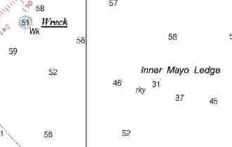

Link Index
MWDC
Home Page
Shipwrecks Page
Albert Galatin
Alice M. Colburn
Alice M. Lawrence
Ardandhu
Barge and Crane
California
Charles S. Haight
Chelsea
Chester Poling
City of Salisbury
Corvan
Dixie Sword
Edward Rich
French Van Gilder
Henry Endicott
Herbert
Herman Winter
Hilda Garston
James Longstreet
John Dwight
Kershaw
Kiowa
Lackawanna
Lunet
Mars
Pemberton
Pendleton
Pinthis
Port Hunter
Pottstown
Romance
Seaconnet
Trojan
USS Grouse
USS New Hampshire
USS Triana
USS Yankee
USS YSD
Vineyard Sound
Lightship
|
Description: Destroyer; Clemson Class; Steel
Dimensions: length - 314 ft. 4 in. width - 31 ft. 8 in. depth - 9 ft. 10 in.
Tonnage: gross - 1060, other - Displacement - 1215
Propulsion: Steam; Propeller
Machinery:
Cargo: Not Applicable
The Shipwreck
Date Sunk: July 14, 1945
Cause: Collision
Location: Buzzards Bay, 2 miles off Acoaxet, near Westport
Coordinates: Latitude, 41o - 27' - 42"N Longitude,71o - 06' - 20"W
Loran: 14307 and 43964.6
One of the 50 "Lend-lease" destroyers the United Kingdom received in exchange for land base leases on British soil, HMCS St. Francis served in rescue, escort and anti-submarine duties throughout the war. Finally replaced by more modern warships, she functioned as a training vessel until the end of the war. In June of 1945 she was sold to Boston Metals Company of Baltimore, Maryland.
On July 14, 1945, St. Francis was under tow of the tug Peter Norman, bound for Baltimore, to be broken up for scrap. After passing through the Cape Cod Canal a thick fog enshrouded Buzzards Bay. Near the entrance to the bay the collier Windward Gulf collided with the old destroyer opening a hole in her hull. Peter Norman tried to ground St. Francis, but she was shipping water to quickly. The aged warship sank on an even keel, in 60 feet of water about 2 miles off Acoaxet with no loss of life.
Back to Top
Dive Site Conditions
Depth in feet: maximum - 58 minimum -
Visibility in feet: average -
Declared a menace to navigation the destroyer was dynamited almost flat with the bottom. Although about 30 feet of the bow is recognizable, sitting upright on a sandy bottom, St. Francis is little more than an underwater scrap heap with portions of mangled wreckage separated by open stretches of sand.
Click on the image to go to the MapTech Map Server,
for additional navigation information.

Back to Top
Historical Background
Constructed: year - 1919; where - Quincy, Massachusetts.
builder - Bethlehem Shipbuilding Corp.
Construction details:
Refitted in 1940 her bridge and pilot house were enclosed
Crew: ; Master:
Owners: Boston Metals Company (1945); Royal Canadian Navy (1940 - 1945); United States Navy (1919 - 1940)
Home or Hailing Port:
Former Name(s) and date(s): USS Bancroft (1919-1940)
Official number: Country: U.S.A.
Other Comments:
1919 - HMCS St. Francis was launched as the USS Bancroft (DD-256) and commissioned June 30. She took part in Atlantic Fleet operations off the East Coast until November 20th, when she was placed in reserve commission.
1922 - July 11, went out of commission at Philadelphia, PA.
1939 - December 18, recommissioned. Bancroft served with the Atlantic Squadron off the East Coast until decommissioned at Halifax, Nova Scotia.
1940 - September 24, transferred to Great Britain. Allocated to the Canadian Government her name was changed to HMCS St. Francis and she was refitted for escort duty. One of her boilers was removed to increase fuel capacity, her four inch deck guns were replaced with anti-aircraft weapons and her torpedoe tubes were replaced with depth charge projectors.
1941 - January 26, ordered to Scotland she joined the 4th Escort Group. On May 20th she rescued survivors from the steamer Starcross, which had been torpedoed. In July St. Francis joined the Newfoundland Escort Force.
1941 through 1943 - escorted numerous Atlantic convoys and made many attacks on submarines.
1943 - June, she joined Escort Group C.2, then in August was transferred to the 9th Escort Group (RCN), working out of Londonderry, Ireland. The following month she re-joined the Western Local Escort Force at Halifax.
1944 - Replaced from active service by more modern vessels St. Francis functioned as a training ship from , out of Digby, Nova Scotia.
1945 - April 1, declared surplus. Decommissioned on June 11.
Back to Top
Salvage
Boston Metals Company formally abandoned St. Francis to the United States Government. The vessel was blasted away as a menace to navigation and portions were removed by salvors. In 1953, hard hat diver Bill George blasted open the engine room and removed most of the machinery for scrap.
Back to Top
Sources:
Dictionary of American Naval Fighting Ships, Vol. I; Navy Dept., 1963
Fishable Wrecks and Rockpiles; Coleman & Soares, 1989
Historical Maritime Group of New England; September 1, 1989
MapTech Mapserver
New England's Legacy of Shipwrecks; Keatts, 1988
Ten Years at Ten Fathoms; Luther
Back to Top
These files are under construction. Any information, specifically dive site related, would be greatfully appreciated.
Send comments to: Chris Hugo
See also: USS Bancroft II; Dictionary of American Naval Fighting Ships
Copyright © 2000 by Christopher C. Hugo
Massachusetts Board of Underwater Archaeological Resources
All Rights Reserved
|